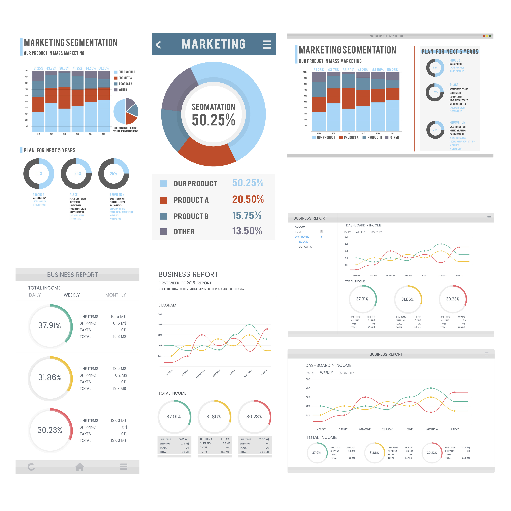

Nuestra carta de Servicios TI
Poseemos un enfoque especializado y amplio de soluciones estratégicas y servicios
a medida, desarrollamos sistemas SaaS, Automatización de procesos, gestión de información
También implementamos servicios Cloud y evaluamos proyectos de inversión

